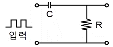
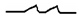
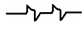
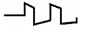
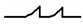
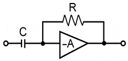
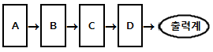

전자기기기능사 (2013-01-27 기출문제)
1과목: 전기전자공학
1. 전원주파수가 60[㎐]일 때 3상 전파정류회로의 리플 주파수는 몇 [㎐]인가?
- 90[㎐]
- 120[㎐]
- 180[㎐]
- 360[㎐]
(정답률: 77%)

2. 트랜지스터 증폭기의 전압증폭도에 대한 설명으로 옳지 않은 것은?
- 입력전압과 출력전압의 비이다.
- 데시벨로 나타낼 수 있다.
- 입력전압과 출력전압은 항상 동위상이다.
- 증폭기의 접지방식에 따라 전압증폭도가 1 정도인 경우도 있다.
(정답률: 77%)
3. 펄스폭이 2[μs]이고 주기가 20[μs]인 펄스의 듀티 사이클은?
- 0.1
- 0.2
- 0.5
- 20
(정답률: 72%)
4. 톱니파 발생회로와 무관한 것은?
- 멀티바이브레이터
- 블로킹발진기
- UJT 발진기
- LC 발진기
(정답률: 54%)
5. 마스터 슬리브 J K FF에서 클록펄스가 들어올 때마다 출력상태가 반전되는 것은?
- J=0, K=0
- J=1, K=0
- J=0, K=1
- J=1, K=1
(정답률: 83%)
6. 증폭회로에서 되먹임(궤환)의 특징으로 옳지 않은 것은?
- 증폭도는 감소한다.
- 내부잡음이 감소한다.
- 대역폭이 좁아진다.
- 주파수 특성이 좋아진다.
(정답률: 65%)
7. 단일 접합 트랜지스터(UJT)의 전극을 옳게 나타낸 것은?
- 이미터 전극 1, 베이스 전극 1
- 이미터 전극 1, 베이스 전극 2
- 이미터 전극 2, 베이스 전극 1
- 이미터 전극 2, 베이스 전극 2
(정답률: 63%)
8. 빛의 변화로 전류 또는 전압을 얻을 수 없는 것은?
- 광전 다이오드
- 광전 트랜지스터
- 황화카드뮴(CdS)
- 태양전지
(정답률: 87%)
9. 푸시풀(push-pull) 전력증폭기에서 출력파형의 찌그러짐이 작아지는 주요 원인은?
- 기본파가 상쇄되기 때문에
- 기수고조파가 상쇄되기 때문에
- 우수고조파가 상쇄되기 때문에
- 우수 및 기수고조파가 모두 상쇄되기 때문에
(정답률: 69%)
10. 그림에서 시정수가 작을 경우의 출력파형으로 가장 적합한 것은?





(정답률: 69%)
11. 쌍안정 멀티바이브레이터에 관한 설명으로 적합하지 않은 것은?
- 부궤환을 하는 2단 비동조 증폭회로로 구성된다.
- 능동소자로 트랜지스터나 IC가 주로 이용된다.
- 플립플롭회로도 일종의 쌍안정 멀티바이브레이터이다.
- 입력트리거 펄스 2개마다 1개의 출력펄스가 얻어지는 회로이다.
(정답률: 62%)
12. 다음 회로의 명칭은?

- 미분회로
- 적분회로
- 정현파 발생회로
- 톱니파 발생회로
(정답률: 83%)
13. P형 반도체에서 정공을 만들어주기 위해서 공급하는 불순물을 무엇이라고 하는가?
- 도너
- 베이스
- 캐리어
- 억셉터
(정답률: 74%)
14. α차단 주파수가 10[㎒]인 트랜지스터에서 이것을 이미터 접지로 사용할 경우 β차단 주파수는 몇 [㎑]인가? (단, Hrb=0.98이다.)(오류 신고가 접수된 문제입니다. 반드시 정답과 해설을 확인하시기 바랍니다.)
- 49[㎑]
- 98[㎑]
- 204[㎑]
- 362[㎑]
(정답률: 44%)
15. 증폭회로에서 전압 증폭도가 10000배이면 이득[dB]은?
- 10[dB]
- 80[dB]
- 150[dB]
- 10000[dB]
(정답률: 64%)
2과목: 전자계산기일반
16. 트랜지스터를 증폭기로 사용하는 영역은?
- 차단영역
- 활성영역
- 포화영역
- 차단영역 및 포화영역
(정답률: 75%)
17. Parity Bit에 대한 설명 중 옳지 않은 것은?
- error 검출 및 교정이 가능하다.
- 기존 코드 값에 1bit를 추가하여 사용한다.
- 기수(Odd)와 우수(Even) 체크법이 있다.
- 정보의 옳고 그름을 판별하기 위해 사용한다.
(정답률: 64%)
18. 다음 중 논리비교동작과 같은 동작은?
- AND
- OR
- XOR
- NAND
(정답률: 64%)
19. 주프로그램 내에서 같은 프로그램의 반복을 피하기 위한 방법은?
- 스택
- 인터럽트
- 서브루틴
- 푸시(push)와 팝(pop)
(정답률: 62%)
20. 중앙처리장치와 주기억장치 사이의 속도 차이를 해결하기 위해 장치한 고속 버퍼 기억장치는?
- 캐시기억장치
- 주기억장치
- 보조기억장치
- 가상기억장치
(정답률: 88%)
21. 전원이 공급되어 있는 동안 지정된 내용을 계속 기억하고 있는 메모리 소자로서 단위 기억소자가 플립플롭으로 구성되어 있으며 비교적 속도가 빠르고 정보를 안전하게 보존하는 것은?
- 마스크롬(Mask ROM)
- Dynamic RAM
- Bubble Memory
- Static RAM
(정답률: 64%)
22. 마이크로프로세서의 구성요소가 아닌 것은?
- 캐시메모리
- 제어장치
- 레지스터
- 제어버스
(정답률: 57%)
23. 데이터 처리 과정 및 프로그램 결과가 출력되는 전반적인 처리과정의 흐름을 일정한 기호로 사용하여 나타낸 것을 무엇이라 하는가?
- 순서도
- 수식도
- 로그
- 분석도
(정답률: 87%)
24. 실수 (0.01101)2을 32비트 부동 소수점으로 표현하려고 한다. 지수부에 들어갈 알맞은 표현은? (단, 바이어스된 지수(biased exponent)는 (01111111)2로 나타내며 IEEE754 표준을 따른다.)
- (01111100)2
- (01111101)2
- (01111110)2
- (10000000)2
(정답률: 57%)
25. 2진화 10진 코드(BCD Code)의 설명 중 맞는 것은?
- 4개의 존 비트(zone bit)를 가지고 있다.
- 4개의 디짓 비트(digit bit)를 가지고 있다.
- 영문자의 소문자, 한글 등을 나타내기 쉽다.
- 최대 128문자까지 표현 가능하다.
(정답률: 63%)
26. 마이크로컴퓨터의 주소가 16비트로 구성되어 있을 때 사용할 수 있는 주기억장치의 최대용량은?
- 8K
- 16K
- 32K
- 64K
(정답률: 69%)
27. 어셈블리어(Assembly Language)의 설명 중 틀린 것은?
- 기호 언어(Symbolic Language)라고도 한다.
- 언어번역프로그램으로 컴파일러(Complier)를 사용한다.
- 기종 간에 호환성이 적어 전문가들만 주로 사용한다.
- 기계어를 단순히 기호화한 기계 중심 언어이다.
(정답률: 68%)
28. 4칙 연산 이루어지는 곳은?
- 기억장치
- 입력장치
- 제어장치
- 연산장치
(정답률: 82%)
29. 다음 중 고주파 전력 측정에 이용되는 전력계가 아닌 것은?
- C-C형 전력계
- C-M형 전력계
- C-P형 전력계
- 볼로미터 전력계
(정답률: 57%)
30. 기준 전압이 1[V]일 때, 측정전압이 10[V]이면 몇 [dB]인가?
- 0[dB]
- 10[dB]
- 14[dB]
- 20[dB]
(정답률: 61%)
3과목: 전자측정
31. 회전 자기장 내에 금속편을 놓으면 여기에 맴돌이 전류가 생겨서 자기장이 이동하는 방향으로 금속편을 이동시키는 토크가 발생하는데 이 원리를 이용한 계기는?
- 유도형 계기
- 가동코일형 계기
- 가동철편형 계기
- 전류력계형 계기
(정답률: 67%)
32. 계측기로 측정한 입력 측 S/N비와 출력 측 S/N비에 대한 비를 나타내며, 단위로 [dB]을 쓰는 통신 품질의 평가 척도를 무엇이라 하는가?
- 충실도
- 변조지수
- 명료도
- 잡음지수
(정답률: 55%)
33. 헤테로다인 주파수계에 대한 설명으로 옳지 않은 것은?
- 흡수형 주파수계에 비하여 측정확도가 높다.
- 흡수형 주파수계에 비하여 측정범위가 넓다.
- 흡수형 주파수계에 비하여 구조가 복잡하다.
- 흡수형 주파수계에 비하여 감도가 양호하다.
(정답률: 54%)
34. 다음은 수신기의 감도 측정회로의 구성도이다. 빈칸의 내용이 순서대로 바르게 나열된 것은?

- A:의사안테나 → B:표준신호발생기 → C:수신기 → D:무유도저항
- A:의사안테나 → B:수신기 → C:표준신호발생기 → D:무유도저항
- A:표준신호발생기 → B:의사안테나 → C:수신기 → D:무유도저항
- A:표준신호발생기 → B:수신기 → C:의사안테나 → D:무유도저항
(정답률: 67%)
35. 다음 중 저항, 인덕턴스, 정전 용량을 모두 측정할 수 있는 계기는?
- Q미터
- 테스터
- 오실로스코프
- 스펙트럼 분석기
(정답률: 61%)
36. 오실로스코프에 파형을 나타나게 하기 위해서 브라운관의 수평편향판에 인가하는 전압 파형은?
- 구형파
- 정현파
- 톱니파
- 펄스파
(정답률: 55%)
37. 측정기의 지시로 나타낼 수 있는 최소의 측정량을 무엇이라 하나?
- 확도(precision)
- 감도(sensitivity)
- 정도(accuracy)
- 보정(correction)
(정답률: 65%)
38. 자동평형 기록계기의 측정 방식에 속하는 것은?
- 영위법
- 직접 측정법
- 간접 측정법
- 편위법
(정답률: 74%)
39. 표준신호발생기의 출력은 1[μV]를 0[dB]로 기준 삼는다. 피측정회로의 이득이 40[dB]이었다면 피측정전압은?
- 10[μV]
- 100[[μV]
- 0.01[μV]
- 0.1[μV]
(정답률: 55%)
40. D/A 컨버터는 무슨 회로인가?
- 저항을 측정하는 회로
- 전류를 전압으로 변환하는 회로
- 아날로그 양을 디지털 양으로 변환하는 회로
- 디지털 양을 아날로그 양으로 변환하는 회로
(정답률: 86%)
41. 서보 기구에 대한 일반적인 조건으로 옳은 것은?
- 조작력이 강해야 한다.
- 추종속도가 느려야 한다.
- 서보모터의 관성은 매우 커야 한다.
- 유압식의 경우 증폭부에 트랜지스터 증폭부나 자기 증폭기가 사용된다.
(정답률: 60%)
42. 다음 중 광대역 VHF 안테나는?(오류 신고가 접수된 문제입니다. 반드시 정답과 해설을 확인하시기 바랍니다.)
- 수직 안테나
- 코니컬(conical) 안테나
- 다이폴(dipole) 안테나
- 폴디드 다이폴(folded dipole) 안테나
(정답률: 42%)
43. 녹음 바이어스를 사용하는 주된 목적은?
- 와우플로터 제거
- 감도 향상
- 안정도 향상
- 일그러짐 감소
(정답률: 61%)
44. 다음 중 자동 온수기기의 제어관계가 옳지 않은 것은?
- 제어대상-물
- 제어량-온도
- 목표값-희망온도
- 조작량-물의 공급량
(정답률: 69%)
45. 다음 중 제너다이오드를 이용한 회로로 가장 적합한 것은?
- 검파회로
- 저주파 증폭회로
- 고주파 발진회로
- 정전압회로
(정답률: 76%)
4과목: 전자기기 및 음향영상기기
46. FM수신기에서 도래전파가 없을 때 일어나는 잡음을 제거하기 위해 자동적으로 저주파 증폭기가 열리고 입력파가 도래했을 때 닫히도록 한 회로는?
- 필터 회로
- 리미터 회로
- 직선 검파 회로
- 스켈치 회로
(정답률: 55%)
47. 수평도기신호 기간에만 AGC를 동작시키고 나머지 기간에는 동작하지 않도록 한 것으로 펄스성 잡음이 특히 많은 장소, 비행기에 의한 반사파의 영향을 받는 장소 또는 포터블 TV와 같이 전파의 세기가 갑자기 변동하는 경우에 사용되는 AGC 방식은?
- 평균치형 AGC
- 첨두치형 AGC
- 키드 AGC
- 지연형 AGC
(정답률: 57%)
48. 초음파 가공기의 공구로 사용되는 것은?
- 황동
- 강철
- 다이아몬드
- 베이크라이트
(정답률: 61%)
49. 녹음기에 관한 일반적인 설명 중 옳지 않은 것은?
- 소거방법에는 직류소거법과 교류소거법이 있다.
- 자기테이프를 매체로 녹음 및 재생을 한다.
- 캡스턴은 고음과 저음의 균형을 유지시켜 준다.
- 자기헤드, 테이프 전송기구 및 증폭기 등으로 되어있다.
(정답률: 59%)
50. 다이오드를 사용한 정류회로에서 과대한 부하 전류에 의하여 다이오드가 파손 될 우려가 있을 경우, 이를 방지하기 위한 조치로 옳은 것은?
- 다이오드를 병렬로 추가한다.
- 다이오드를 직렬로 추가한다.
- 다이오드 양단에 적당한 값의 저항을 추가한다.
- 다이오드 양단에 적당한 값의 콘덴서를 추가한다.
(정답률: 69%)
51. AN(Arrival Notice) 레인지 비컨(range beacon)에서 등 신호 방향과 관계없는 각도는?
- 45º
- 190º
- 135º
- 315º
(정답률: 76%)
52. 청력을 검사하기 위하여 가청주파수 영역 중 여러 가지 레벨의 순음을 전기적으로 발생하는 음향발생장치는?
- 심음계
- 오디오미터
- 페이스메이커
- 망막전도 측정기
(정답률: 82%)
53. 영상의 가장 밝은 부분에서 가장 어두운 부분을 단계로 표시하는 것을 무엇이라 하는가?
- 화소
- 계조
- 비트맵
- 추출
(정답률: 69%)
54. 자기테이프와 헤드의 접촉면에 있어서의 간격이 커질 경우 손실도 커지게 되는 것은?
- 두께 손실
- 와류 손실
- 스페이싱 손실
- 갭 손실
(정답률: 65%)
55. VTR용 Head의 자성재료에 요구되는 특성으로 옳지 않은 것은?
- 실효 투자율이 높을 것
- 가공성이 좋을 것
- 마모성이 클 것
- 잡음발생이 적을 것
(정답률: 79%)
56. 전고조파의 실효치와 기본파의 실효치의 비를 무엇이라 하는가?
- 변조도
- 신호대 잡음비
- 역률
- 일그러짐률
(정답률: 44%)
57. 다음 중 디지털 3D 그래픽스 처리의 구성이 아닌 것은?
- 기하처리
- 렌더링
- 프레임버퍼
- 모델링
(정답률: 64%)
58. 다음 중 변위-임피던스 변환기가 아닌 것은?
- 다이어프램
- 용량형 변환기
- 슬라이드 저항
- 유도형 변환기
(정답률: 53%)
59. 라디오 수신기의 중간주파수가 455[㎑]이고, 상측 헤테로다인 방식이라면 700[㎑] 방송을 수신할 때 국부발진 주파수는?
- 455[㎑]
- 700[㎑]
- 1155[㎑]
- 1600[㎑]
(정답률: 79%)
60. 무선 수신기의 안테나 회로에 웨이브 트랩(wave trap)을 사용하는 목적으로 가장 적절한 것은?
- 혼신을 방지하기 위하여
- 페이딩을 방지하기 위하여
- 델린저의 영향을 방지하기 위하여
- 지향성을 갖게 하기 위하여
(정답률: 48%)